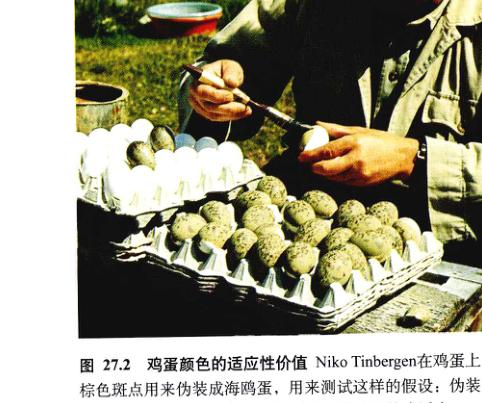
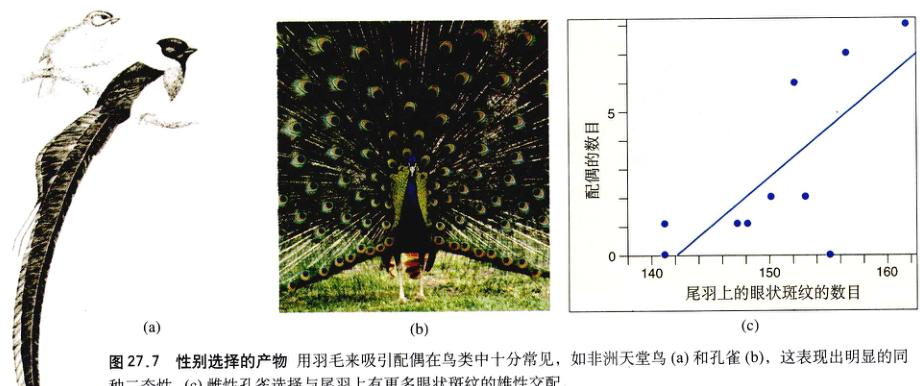
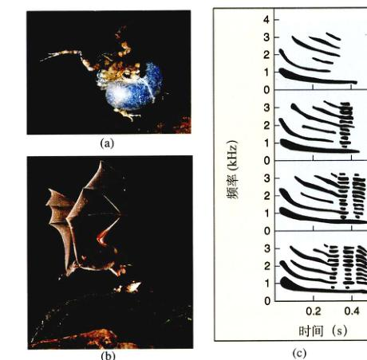
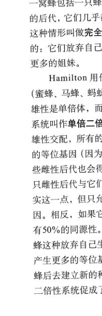

图 27.1 在死亡线上挣扎的蛇——是这样吗？ 当受到威胁的时候，许多生物会伪装死亡，就像这条蛇在做“戏”——嘴中吐出泡沫，变得柔软或者看起来像是麻痹了。
研究动物行为有很多方法：研究者可以探询行为是如何发育的，行为背后的生理基础是什么；也可以研究行为的功能是什么，它们是否对动物有利等等（图 27.1）。行为生态学家就是研究后面的问题，尤其研究动物是如何通过行为适应以增加繁殖成功率的。本章将讨论行为生态学的有关问题。
在一篇重要的论述中，诺贝尔奖得主 Niko Tinbergen 归纳了生物学家关于动物行为所能提出的问题类型。他将行为研究划分为生理基础和进化功能两部分。Tinbergen 是后一方面研究的先行者，他首先注意到行为的生存价值 (survival value)，即动物借助行为使它自身或它的后代得以存活。例如，Tinbergen 观察到海鸥在完成孵卵之后把蛋壳从窝里推出去。为了研究这种行为的起因，他将鸡蛋表面涂上颜色，使它们看起来与海鸥蛋十分相似，而这些蛋在周围环境的背景下很难察觉（图 27.2）。Tinbergen 将这些蛋分散在海鸥出没筑巢的地方，旁边散落放置白色的碎蛋壳作为对照，某些伪装蛋旁边没有碎蛋壳，然后观察哪些鸡蛋更容易被发现。由于乌鸦能够以蛋壳内部的白色为线索，所以它们更多地吃那些蛋壳附近的鸡蛋。这样，Tinbergen 得出结论——挪开蛋壳的行为是适应性的，它能够减少被捕食的几率，增大后代的存活率。
Tinbergen 是行为生态学 (behavioral ecology) 的奠基人之一。行为生态学研究行为的自然选择，这一学科分支是研究行为的适应意义 (adaptive significance)，探索行为如何影响生存和繁殖的几率。现代行为生态学的研究主要集中在动物行为对生殖率的贡献，即行为的适合度 (fitness) 方面。第 26 章中，我们知道个体的不同是由基因引起的，这样自然选择将使行为产生进化，研究行为与适合度之间的关系就是研究适应本身。
行为生态学领域的研究最终与两个问题有关。第一，行为具有适应性吗？虽然可以猜想个体行为在某一方面反映了对环境的必然适应，但事实并非总是如此。在第 20 章中我们看到，除了自然选择以外，还有许多因素会导致性状的分化，比如基因漂流。而且，一个种群进化出的某些性状也许在过去具有适应性，而现在已经失去用处。这些可能性对所有的性状都成立，当然也包括了动物的行为。
如果一个性状具有适应性，那么问题就变成了这个性状是如何实现适应的？最终的衡量标准是生殖成功率。行为生态学家对一个性状产生更大的繁殖成功率更感兴趣，是通过增加能量摄入使后代增多？还是降低被捕食的几率？行为生态学家研究一个特定行为对这些活动的影响，然后观察它们是否增加。
通过研究那些功能已经非常清楚的行为，我们能够对行为生态学有一些总体上的认识。很多行为可供选择，我们来看一看取食行为。对很多动物来说，食物有不同的大小，大块的食物可能含有更多能量，但是也许更难获得或者更为稀少。而且，某些食物可能更为遥远，因此取食行为对这些动物来说包含了两个方面的内容：食物的能值以及为获得食物所付出的代价。食用不同大小的猎物所获得的净能量（卡或焦尔）是上述二者的差值。按照最适觅食理论 (optimal foraging theory)，自然选择有利于取食行为在能量上尽可能选择高效的个体，换言之，动物倾向于捕食在单位时间内尽可能少消耗它们的体能的猎物。
很多研究证明了捕食者偏爱那些消耗它们能量最少的猎物。比如河蟹更喜欢中等大小的蚌类，这种猎物能够提供最大的能量回报，太大的蚌类虽然提供更多的能量，但是也需要消耗更多能量才能敲开它们的硬壳（图 27.3）。
图 27.2 鸡蛋颜色的适应性价值 Niko Tinbergen 在鸡蛋上画出棕色斑点用来伪装成海鸥蛋，用来测试这样的假说：伪装的鸡蛋更加难于被捕猎者发现，从而增加了幼雏的成活率。
图 27.3 最佳膳食 滨蟹选择能量上有利的猎物作为食物。图中曲线描述了以不同大小的蚌类为食时的净能量收获（获得的能量减去消耗的能量）。柱高度表示不同大小的蚌类的数目。滨蟹通常以那些能够提供最多净能量的蚌类为食。
图 27.4 为空间而竞争 鸟类的领地大小随着竞争者的数量而调整。当把6对大山雀 (Parus major) 从它们的领地中移走（在左图中以R表示），这些领地将会被附近的其地鸟类和4对新的大山雀（在右图中以N表示）所占据。数字对应于之前和之后一直存在的鸟。
这种最优取食理论基于两种假设。第一，自然选择只对那些需要尽可能多并能提高生殖成功率的动物适应力更强，在某些情况下，这是正确的。比如，哥伦比亚地鼠和斑马雀的能量收集和后代数目之间存在着正相关；类似地，蜘蛛生殖率也与它们的取食量有着直接关系。
然而，动物除了获得能量之外还有其他需要，而且有时这些需要之间存在着矛盾。一个明显的例子是躲避敌害；摄入最大能量的行为往往并不能使它们自身被捕食的风险最小化。这样，最适应的行为经常体现了一种在获得能量和被捕食风险之间的平衡。许多动物在捕食者出现的时候就改变了它们的取食行为。另一个例子是寻找配偶；许多雄性动物通过大大降低它们的取食速率来吸引和保卫雌性动物。
第二个假设是最优取食来自自然选择。如同我们已经看到的，自然选择只有在个体遗传变化时才能导致性状的进化。个体要求最大能量摄入的行为是否属遗传变化？这方面的研究不多，但是也有例外。比如，一项研究发现能够摄入最多能量的雌性斑马雀的后代也有更高的生存几率。由于鸟类在离巢之前就与母亲分开，因此亲鸟与子鸟这种高生存力的相似性，也许与其基因基础有关而不是学习的结果。
个体取食行为的差异也许是年龄的函数。没有经验的黄旋灯草雀没有学会怎样有效地猎取大的食物，由于吃这些食物所消耗的能量大于收益，所以它们把注意力集中在那些小一些的食物上。只有当这些鸟更富有经验时才会把大食物列入菜单。
动物经常在一个大的区域内进行日常活动，这个区域称做领域 (home range)。在许多种动物中，虽然个体的领域在时间和空间上可能会有重叠，但是每个个体都将保卫某块领地独享用，它们在自己的这块领地上享有有限的资源，比如食物或者配偶，这种行为称为领土行为 (territoriality)（图 27.4）。领土行为的关键在于保卫领土不受其他个体的侵犯。动物采取明显的警示和防卫行为，显示它们对领地的占有权。鸟在领地里鸣叫，防止其他鸟的入侵；如果入侵者没有被歌声赶走，这将遭到袭击。然而，保卫领土也要付出代价，鸣叫需要能量，攻击会导致伤害，另外，公开显示自己的领主地位会把自己暴露给捕食者。
那么为什么动物还要进行领土保卫战呢？在过去的20年里，人们逐渐认识到必须要用损益回答这个问题。领土保卫固然需要花费代价，但是它也有好处，这些好处是可以获得更多的食物、配偶或者庇护所。吃花蜜的鸟类如蜂鸟和太阳鸟就是很好的例子（图 27.5）。一只鸟独自占领一片花丛有很大的好处，这使得它能够更加有效地摄取花蜜。为了保证独自享用，鸟必须积极保卫花丛，比如太阳鸟每小时消耗 13 kJ (3 kcal) 的能量来驱逐入侵者，这种能量消耗将部分的抵消保卫领土的好处。能量抵消的程度取决于花丛产量以及鸟的取食效率，如果花丛中花朵稀少或者花蜜含量很低，太阳鸟就可能会入不敷出。这种情况下，领土保卫就没有优势可言。同理，如果花朵很多，鸟即使不进行领土保卫也可以得到充足的能量，从能量的角度来看，保卫过量的能源也不合算。这样领土保卫只在花蜜适量中，并且利益超过损耗时才会发生。
图 27.5 领土保卫行为的好处 太阳鸟保护花丛以增加蜜源。
图 27.6 选择雌性配偶的优势 雄性摩门螽斯选择体型较大的雌性为配偶，因为较大的雌性产生更多的卵。于是，雄性对伴侣的选择增加了物种的适合度。
对许多物种来说，领土大小对于配偶的意义又比对于食物更加重要。比如，一些雄性蜥蜴在交配季节占掘很大的领地，这些领地里生活着好几只雌性蜥蜴，如果仅仅为了得到食物就不需要这么大的领地。在非交配季节，雄性领地大小急剧缩减，保卫领地的攻击性行为也相应减少。
筑巢、寻找配偶、哺育后代等行为，组成了一系列与生殖有关的行为，这些行为常涉及寻找和保卫特定的领地、选择配偶和哺育后代所需要的能量，其中配偶选择与自然选择直接相关。我们将分别介绍这些生殖行为。
在交配季节，动物要在许多方面做出重要选择——拥有多少个配偶？花费多少时间和能量哺育后代？这些决定都属于繁殖策略 (reproductive strategy)，它们使得物种在进化过程中取得最大的生殖成功率。繁殖策略的进化取决于生殖过程的能量消耗，以及食物、巢所和异性数量的空间分布。
雌雄两性动物的繁殖策略大不相同。达尔文第一个发现雌性并不是和它们遇到的第一个雄性交配，而是通过评价其质量以决定是否交配。这种行为叫做配偶选择 (mate choice)，这在许多脊椎动物和非脊椎动物中普遍存在。
相反，雄性对雌性的挑选则不那么普遍。为什么呢？繁殖策略在两性之间的差异可用它们对后代投资的大小来解释。亲代投资 (parental investment) 是指亲代在繁殖与养育后代方面所做出的贡献，也就是雌雄两性在繁殖事件中能量付出的一一个估计。
许多研究表明，雌性的亲代投资很高。其中一个理由是卵子比精子大得多。人的卵子比精子大 195 000 倍！卵子的卵黄包含蛋白质、脂肪以及其他为了保证胚胎发育所提供的能量与营养，但是精子只不过是移动的 DNA。在一些动物中，妊娠和哺乳都是由雌性来承担的，这些都要花费巨大的能量。
上述差异使两面临着很不相同的选择压力。因为任何简单的生殖事件，其价值对雌雄性来说都相对较低，它们就尽可能多地与雌性交配以增加后代数量——雄性的适合度很少被它们制造的精子的数量所限制。相反，每一次生殖事件对于雌性来说都要付出很大代价，而且它们的卵子数目也限制了生殖的成功。所以雌性很挑剔，要选择出对后代最有利的雄性。我们将看到这种益处有很多多形式。
这些结论只有在雌性生殖投资远远超过雄性时才会成立。当雄性对抚养后代也付出相同的代价时，两性对对方的选择就变为平等了。
也有的时候，雄性投资大于雌性投资。例如，雄性蟋蟀在交配时把一个富含蛋白质的精囊传递给雌性，而这个精囊几乎占了雄性体重的 30%，它为雌性提供营养以发育卵子。在这种情况下，雌性之间发生竞争以赢得雄性，而雄性很挑选者。雄性确实很挑剔，喜欢那些更肥重雌性。雄性选择具有优势，因为肥重的雌性卵子更多，所以雄性选择它们可以产生更多后代（图 27.6）。
在第20章中我们知道，生殖成功由一系列因素决定：个体寿命、获取配偶的成功率以及每次交配产生后代的数目。其中第二个因素叫做性选择 (sexual selection)。有人认为性选择与自然选择不同，但是另外一些人认为它是自然选择的一个特例，生物利用它以增强适合度。
性选择包含同性选择 (intrasexual selection)（“在竞争中征服别的雄性”，如达尔文所说）和异性选择 (intersexual selection) 尤其是配偶选择（“魅力力量”，也如达尔文所说）。这种选择导致两性异形，即同一个体进行决斗的器官进化，比如鹿角和公羊的特角；同样，吸引异性交配的装饰比如长长的尾羽和鲜艳的毛色 (图 27.7(a)) 也是性选择的结果。这些特征叫做第二性征 (secondary sexual characteristics)。
许多物种的同性个体（通常是雄性）相互竞争以获得与异性交配的机会。这些竞争可能源于领地所有权的竞争，或者直接为了控制异性。后者在很多物种中都有体现，比如一大群雌性黑斑羚跟随着一只雄性黑斑羚并与之交配，而这只雄性积极地保卫它的这些特权。
在这样的配偶系统里，少数雄性能够得到大量雌性并与它们交配，而大部分雄性则根本得不到交配机会。海象控制着海滩上的领地，只有少数雄性才有配配的权利。例如 8 只雄海象拥有 348 只雌性，而其他雄性很少有交配的机会。
因此，自然选择对于能够战胜其他雄性的性状极为有利。很多时候个体大小决定着交配成功率，大个的雄性能够控制个头小的。进化的结果使许多领地性物种的雄性比雌性个头大得多，因为最大的雄性能够得到更多的交配机会。这种性别差异称为二态性 (sexual dimorphism)。在其他物种中，雄性进化出攻击器官，比如犄角和锋利的犬齿，这些特征有关的性状进化也是因为它们有利于同性选择。
雌性孔雀喜欢与尾羽上斑点更多的雄性交配（图 27.7b、c）。类似的，雌蛙喜欢与叫声既多又宏亮的雄性交配。这些行为又是如何进化的呢？
有时候配偶选择的益处是明显的。许多鸟类和哺乳动物的雄性帮助抚育后代，雌性就会选择能够提供最好服务的雄性，这是由于父亲越好，它的后代越容易养活。
图 27.7 性别选择的产物 用羽毛来吸引配偶在鸟类中十分常见，如非洲天堂鸟 (a) 和孔雀 (b)，这表现出明显的同种二态性。(c) 雌性孔雀选择与尾羽上有更多眼状斑纹的雄性交配。
资料来源：M. Petrie，“雌性孔雀选择具有精细尾羽的雄性”，动物行为，1991。
有的雄性并不提供这些服务，而是保护领地以提供食物和庇护地。这时雌性选择的对象是拥有最好领地的雄性。
然而，还有一些物种的雄性不对雌性提供任何直接的好处，这时雌性选择它们得不到明显的好处。例如，选择一个有长尾巴或者会唱歌的雄性带来的好处就是间接的。
为解释这种进化现象，有人提出了很多理论，其中之一是雌性选择最健康或者寿命最长的雄性。比如大个头的雄性可能存活得更长，获得更多食物，并且抵抗寄生虫和疾病的能力更强。类似地，在红鳍和一些鸟类中，雄性的颜色反映了取食的数量和它的健康状况。雌性动物与个体大和色彩鲜艳的雄性交配能够够获得两个好处：第一，雄性活得长是因为它的遗传基础好，雄性能够保证它的后代从父亲方面得到好的基因。研究证明，受雌性青睐的雄性其后代生命力确实更强。第二，健康的雄性不容易携带疾病，在交配时就不容易传染自身。
这个理论又因下面的发现得到进一步完善。某些情况下，雌性喜欢与具有不利于生存性状的雄性交配（图 27.8）。例如，雄孔雀的长尾巴阻碍飞行，并且容易暴露给捕食者。雌性为什么喜欢这样的雄性交配呢？缺陷假说 (handicap hypothesis) 认为，只有具有最优秀优势的雄性能够在这种的缺陷下生存，选择一个缺陷最大的雄性，能够保证后代接收到某些高质量的基因。当然，后代也会遗传这些缺陷的基因。然而，进化生物学家还在为这些假说不懈地辩论着。
性感觉系统能够感知某种特定的刺激，这似乎促进了特定求偶方式的进化。比如，雌性能够更敏锐地觉察到特定的颜色或者频率，于是雄性就在原有基础上“开发”出雌性喜欢的特征——如果雌性特别易于检测出红色目标，雄性就会进化出红色的外貌特征。有一种泡蟾 (Physalaemus pustulosus)（图 27.8），它们的鸣叫与近亲物种不同，这种蛙的雄性叫声中有一种“咯咯”声。最近的研究表明这种特别的叫声也能够吸引其他类似物种的雌蛙，虽然它们自己的种群的雄性不能发出这种声音。这种进化的原因目前尚不清楚。
还有很多理论解释交配偏爱的进化。这些理论在某些时候是正确的，但是没有哪个理论能够解释所有有交配行为的变化，因此性选择是一个经常有新发现的领域。
图 27.8 叫声的好处和危险 (a) 雄性泡蟾 Physalaemus pustulosus。(b) 雄性的鸣叫能够吸引雌性，但是也引来了蝙蝠。(c) 自上而下的鸣叫声越来越复杂。雌性选择更加复杂的鸣叫，而这些鸣叫叫声波幅听到。因此，那些受雌性青睐的雄性要冒更大的被蝙蝠捕食的危险。
不同动物的配偶个数在动物界中有很大变化。一夫一妻制、一夫多妻制（图 27.9）、一妻多夫制都是常见的配偶系统。正如选择一样，配偶系统的进化也会增大生殖适合度。研究表明，配偶系统受生态习性的强烈影响。例如一只雄性会保卫领地，为雌性提供繁殖所需的住所与食物，而这块领地可为几个雌性提供资源。如果雄性领地质量差，那么雌性就会选择具有高质量领地的雄性。这样一个雄性已经已有了配偶，雌性还是愿意选择它，尽管有些雌性还没有配偶，但是其领地质量低下还远得不到雄性的青睐。这样自然选择就会产生一夫多妻制。
后代的需求也限制了配偶系统。如果成功抚育后代需要双亲的贡献，那么一夫一妻制是最好的选择。鸟类中大约 90% 实行一夫一妻制。雄性选择与配偶一起照料和抚育后代，或者选择抛弃配偶寻找其他雌性，这两种策略都能够增加它的适合度。自然选择偏向哪一个策略，取决于雄性在喂养和保卫后代中所起的作用。晚成雏 (altricial) 的动物需要长久精心的照顾，这时，父母双亲都会照顾后代，雄性抛弃配偶的倾向就小。而在早成雏 (precocial) 的动物中，雄性就可能倾向于一夫多妻制。虽然一夫多妻制比较普遍，但是一妻多夫制在动物界也不鲜见，比如短点矶鹬的雄性孵卵并且抚育后代，而雌性产卵后又与其他的雄性交配。
图 27.9 鹬蝠中的一夫多妻制 右下角的雄性鹬蝠在守卫一群雌性鹬蝠。
图 27.10 亲子关系研究 (a) 篱雀的 DNA 指纹谱。各个条带代表了不同长度的 DNA 片段。D-G 为四个子代的样品。通过比较出现在雄性亲代的电泳带，可以判断哪一个雄性亲代是子代的父亲。三角形用来表示那些用于判断亲子关系的电泳带。可以看出，β 雄性是 D、E 和 F 的父亲，但不是 G 的父亲。(b) 对美洲红翼鸫的 DNA 指纹的研究结果。分数表示了雄鸟领地巢穴中的幼雏以其为父亲的比率。箭头表示了有多少后代是以其领地外的某个雄性为父亲的。
最近科学家又发现了很多出人意料的繁殖系统，这一方面是由于新技术的应用，另一方面是由于更加细致的野外实验的结果。
第19章中我们看到了如何通过 DNA 来鉴定血液样，该技术的另一个应用是亲子鉴定。每一个体的 DNA 指纹是不同的，这样通过比较一个男人和一个孩子的 DNA，专家们能够比较肯定地确定这个男人是不是孩子的父亲。
这项技术现在广泛应用于法律诉讼中，但是它对于行为生态学家也是一件标准武器。通过亲子鉴定，研究者可以精确地计算雄性的生殖成功率，从而评价它们采用的生殖策略的成功性（图 27.10a）。在红翼山鸟的经典实验中（图 27.10b），研究者发现一半的巢穴中，至少有一只鸟的父亲是巢穴以外的雄性。总体来说，后代中有 20% 是这种婚外交配 (extra-pair copulations, EPC) 的结果。研究发现，EPC 在鸟类世界中比预想的普遍得多，即使在一些一夫一妻制的鸟类中，非巢主生育的后代发生率也很高。
为什么个体要婚外交配？对于雄性来说答案是明显的：这增大了生殖成功率。对于雌性来说，还不太清楚，它并不能增大后代数目。一种可能是雌性与基因优越的个体交配使后代质量高。另一种可能是雌性可以在抚育后代时得到更大的帮助。如果雌性与多个雄性交配，那么每个雄性在它抚育后代时都会提供帮助。英国篱雀的情况便是如此，雌性不仅和巢主交配，还和领地周围的雄性交配，它们会帮助它抚育后代，因为这些后代中可能有它们的孩子。
自然选择还产生了其他形式的多种进化途径以增加生殖成功率。例如，许多鱼类有两种雄性个体。体形大者，可以保卫领地或者配偶；体形小者采取完全不同的策略，它们没有领地，而是在其他雄性的领地周围游荡。当个大雄性求偶结束之后，雌性产卵，雄性释放出精子；与此同时，个小予雄性趁机把精子产在水里，使一些卵子受精。如果这种策略能够取得成功，这就两种雄性的生殖策略都将是自然选择的结果。
类似的生殖模式也存在于其他生物中。在某些粪蜣螂的群体中，负责领地的雄性个体有巨大的角来保卫雌性居住的领地；而负责生殖的小的雄性个体则没有角，它们挖掘侧沟以求截住集中的雌性。等足目的甲壳动物有三种不同大小的雄性个体，中等大小的雄性进入大型雄性的领地时被看作是雌性，体型最小的雄性在不被察觉的情况下与雌性“偷情”。
以上只是众多配偶系统的一瞥。对于任何一种配偶系统，只要能够够增大繁殖成功率，自然选择就会促成它的进化。
利他行为——以牺牲自己为代价使其他个体获得好处的行为——出现在许多动物中。比如很多鸟类的父母在抚育后代过程中得到其他鸟的帮助，这些鸟叫做帮助者 (helpers at the nest)。哺乳动物和鸟类在发现捕食者时会发出警报，告知其他成员，尽管这种行为会引起捕食者的注意。另外，抚养幼崽的母狮会帮助照顾其他母狮的后代。
长久以来利他行为的存在使进化生物学家感到迷惑。如果利他要使个体付出代价，那么利他基因是因为什么自然选择而保存下来的呢？
进化有很多种解释。电视记录片中经常的说法是这种行为对整个物种有好处。这种解释的问题在于，自然选择是对个体而不是物种发生作用。即使是对整个物种有害的性状，只要它们对个体有好，也会发生进化。有时候，自然选择作用于一群个体，只是很少见到而已。比如，超级食肉性的等位基因在种群中得到进化，具有这个基因的个体就成为优势，因为它们能够得到更多食物，然而，整个群体却会因为食物的迅速缺乏而灭绝，这对基因便从物种中消失。在某些情况下会发生这种群体选择 (group selection)，但在自然界中与之对应的条件很少见。大多数情况下，“有利于物种”不能够解释利他性状。
另一种解释是看似利他的行为其实并不利他。比如巢边帮助者经常很年轻，它们通过帮助孵卵者得到有用的护理经验。更有甚者，在领地周围游荡，这些个体能够在领主死后继承领地，取而代之。类似地，报警者报警可能引起其他成员的慌乱从而获利。在混乱中，报警者可以不被察觉地潜走。最近一些详细的实验证明了一些行为确实是利他的，而另一些看似利他，实际上却不是。
Rutgers 大学的 Robert Trivers 认为个体可以形成“搭档”而相互实施利他行为，这样对双方都有利。在这种互利性 (reciprocal altruism) 的进化中，“欺骗者”（非互惠者）被清除出去，以后得不到帮助。Trivers 认为，如果利他行为相对代价不大，那么一个欺骗者得到的好处就远远比不上它今后可能得到的好处。在这种情况下，欺骗就不会发生。吸血蝙蝠通常 8~12 只群居在枝叶稀疏的树上。由于这些蝙蝠代谢速率很快，没有吃到东西的个体很快就会死去。找到猎物的蝙蝠会大量吸血，但是它们会给没有找到食物的同伴留下一部分血液；放弃这一小部分对它而言并不是很大的代价，而这可以使一个同伴不至于饿死。吸血蝙蝠倾向于把血分给过去帮助过它们的同伴，如果一个个体不帮助其他个体，它就会被从以后的血液分享小组中赶出去。
关于利他起源最有影响的解释是 William D. Hamilton 1964年提出的。
图 27.11 遗传关系的例子 平均来说，同胞兄弟姐妹会有一半相同的等位基因，而表兄弟姐妹则仅仅拥有八分之一相同的等位基因。
这里我们引用伟大的种群遗传学家 J. B. S. Haldane 1932 年说过的一句话，他说他将十分乐意为两个兄弟或者8个表兄弟献出生命。从进化的观点来看，Haldane 的话很有道理，因为 Haldane 从其父母那里得到一对等位基因，他的每一个兄弟都有可能获得同样的基因（图 27.11）。结果是他的两个兄弟合起来传给后代的基因与 Haldane 自己传给后代的基因是一样的。类似地，Haldane 和一个表兄弟会有 1/8 的基因相同（图 27.11）。他们父母是兄弟姐妹，每个人都会有一半的基因来自祖父母，每个孩子会遗传这些的一半，这一半中的一半是相同的：1/2 × 1/2 × 1/2 = 1/8。8个表兄弟合起来传给后代的基因和 Haldane 自己传给后代的基因也是一样的。Haldane 明确地阐释了 Hamilton 的观点：自然选择对于任何使得个体基因能够传递给下一代的几率得以增加的策略都有效。
Hamilton 认为通过对亲属进行援助，利他者可以增大其亲属的生殖成功率，这足以补偿其自身适合度的损失。因为利他者的行为增加了其亲属基因的传播，这个基因会被自然选择所保留。这种选择称为亲缘选择 (kin selection)。虽然利他行为是相互的，但是基因的本质却是“自私的”，因为它驱使生物体在其他个体身上体现自己。
Hamilton 的亲缘选择模型预言，利他行为更容易发生在有亲密切的亲属之间。两个个体亲缘关系越近，它们相同的基因就越多，这种关系适用 Hamilton 规则 (Hamilton's rule) 来描述：当 b/c > 1/r 时，利他行为发生作用。其中 b 和 c 分别是利他行为的获利和付出，r 是关系系数，表示关系的亲密程度。按照这个规则，如果能使和它有 1/4 相同基因的亲属产生4个以上后代的话，那么牺牲一个个体的行为就是有利的。
动物界中有很多亲缘选择的例子。地鼠在发现捕食者如狼或者猫头鹰出吗叫，这样，捕食者会攻击鸣叫的地鼠，所以，发警报会使地鼠处于危险之中。地鼠家族的成员包括一只雌鼠和它的女儿、姐妹、姨妈与侄女，家族中的雄性和这些雌性没有遗传关系。把所有地鼠的毛染色，通过记录是哪个个体发出警报以及它们周围的社会情况，研究者发现周围有亲属的雌性更容易发出报警；而雄性叫的很少，因为它们与家族成员之间没有亲属关系。
另一个例子是在非洲沿河群居的白额蜂鸟，它们组成 100~200 只的社群。与地鼠不同的是，留在社群里的是雄性，雌性飞出去加入新的社群。许多食蜂鸟并不抚养自己的后代而是帮助其他鸟。这些鸟大部分比较年轻，但是也有一些以前尝试过筑巢但失败的鸟。平均算来，有一个帮助者，后代的成活率就增加一倍。两条证据支持了亲缘选择的假设：第一，帮助者——半是与社区中其他鸟有亲缘关系的雄性，而不是没有亲缘关系的雌性；第二，当鸟选择帮助不不同的父母时，它们总是帮助与它们亲缘关系最近的。
亲缘选择最著名的应用也许出现在社会性昆虫中。一窝蜂包括一只蜂后（唯一的产卵者）和将近五万只它的后代，它们几乎全都是没有卵巢的雌性工蜂（图 27.12），这种情形叫做完全社会性 (eusociality)。工蜂不育是利他的：它们放弃自己的生殖能力，以帮助它们的母亲养育更多的姐妹。
Hamilton 用他的亲缘选择模型解释了膜翅目昆虫（蜜蜂、马蜂、蚂蚁）的利他行为的起源。这些昆虫中雄性是单倍体，而雌性是双倍体。这种罕见的性别决定系统叫做单倍二倍性 (haplodiploidy)。如果蜂后只和一只雄蜂交配，所有的雌性后代都从它们的父亲那里遗传相同的等位基因（因为它是单倍体，只有一个等位基因）。这些雌性后代也会得到蜂后一半的等位基因，结果是每一只雌性后代与它们的姐妹们有 75% 的基因相同。为了证实这一点，但只允许父亲拥有每个基因中的一个等位基因。相反，如果它自己生育后代，它与后代的基因将只有 50% 的同源性。这样，由于这种很近的基因相关性，工蜂这种放弃自己生育而帮助它们的母亲生产姐妹，从而产生更多的等位基因。它们的姐妹中有些将成为新的蜂后去建立新的种群。如此看来，这种不同寻常的单倍二倍性系统促成了膜翅目昆虫完全社会性的进化。
然而，这个理论的缺陷是，在其他群体动物，包括白蚁、白蚁和裸鼹鼠中也存在在社会系统。虽然牧草虫和白蚁不是膜翅目，但是白蚁和裸鼹鼠不是。所以，尽管单倍二倍体倍对完全社会性进化有帮助，但是并非非必不可需。
图 27.12 蜂群中的分工 蜂后（此处用红色点示其胸部）是惟一的产卵者。它的女儿们是没有生殖能力的工蜂。
细菌、腔肠动物、昆虫、鱼、鸟、狼、狮子、鲸鱼、黑猩猩等不同的生物都以社会群居的形式生活。为了解释这一系列的社会现象，我们可以广泛地把社会定义为共同生活的有组织的群同种动物。
为什么个体要放弃单独生活而成为群体的一分子呢？我们刚才看到的亲缘选择是一种解释：群体可以包含亲属。在其他情况下，个体可以直接从群居生活中获利。比如，一只鸟如果在鸟群中生活就可以得到更大的安全保障。鸟群越大，被捕食的风险就越小，因为更多的个体可以发现捕食者（图 27.13）。鸟群的个体还能从别的成员那里得到食物来源的新信息。一些食肉动物成群捕食以提高捕食效率，另外还可以对付特别大的猎物。
昆虫的社会性在两个目中得到充分的进化——膜翅目和等翅目（如白蚁）。所有的蚂蚁、某些蜜蜂、某些黄蜂以及所有的白蚁都是完全社会性的；它们有生殖和劳动的分工（负责生育的蜂后或者蚁后和不育的工蜂或工蚁），以及代与代之间的重叠（蚁后或蜂后与它们的后代住在一起）。社会性昆虫由不同的社会等级 (caste) 的昆虫构成，等级不同的昆虫，其大小、形态及其承担的任务都不同，比如工蜂和兵蜂。
图 27.13 群居行为降低了被捕食的几率 (a) 鸽群增大时，老鹰成功捕食鸽子的几率减小。(b) 当更多的鸽子出现在鸽群中时，它们能够更在更远的距离察觉到老鹰的出现，于是有更充裕的时间逃跑。
蜂后分泌一种叫做“蜂后物质”的外激素来保证它在蜂窝中的统治地位，这种物质抑制其他雌性的卵巢发育，从而把它们变成不育的工蜂。雄蜂（Drones）只是为了交配而存在。当春天蜂群增大时，外激素显得不到足够的“蜂后物质”，蜂群即将开始膨大。工蜂制造几个新的蜂后室，新蜂后开始在里面发育。体壮的工蜂寻找新的筑巢场所，把它的方位通知给蜂窝中的其他成员。老蜂后和一些雌性工蜂便搬到新的蜂窝中。随后，新蜂后产生了。它在杀掉其他潜在的蜂后后飞出去交配，然后返回蜂巢行使“统治”权。
切叶蚁是另一种奇妙的社会性昆虫，它们居住在有着 700 万个体的洞穴里，在地下饲养真菌。它们土墩状的窝是一座地下城市，覆盖 100 m²，有上百个入口和 5 m 深的房间。工蚁之间的劳动分工和它们的体型有关。每天，大个的工蚁在从蚁窝到灌木丛之间切下叶子切成碎片带回巢穴。小个的工蚁咀嚼碎片，把它们洒在真菌饲养室的地板上，有的小工蚁还把真菌埋到树叶下面。很快一片兴旺的真菌花园就开始生长，这里有工蚁除去多余的真菌，有护兵蚁把幼蚁搬到花园里，喂它们吃真菌。当新的可育的蚁后长成后，它将飞离巢穴，建立自己的王国。
与高度结构化并且高度利他的昆虫社会形成鲜明对比的是脊椎动物社会，它们的组织较为松散。脊椎动物拥有更大的脑，能够完成更复杂的行为，却没有昆虫那么利他，这看起来是矛盾的。然而，一些复杂的脊椎动物社会系统中的个体也会表现出相互的利他和亲缘选择的利他行为。但是，脊椎动物群体在成员之间也显示示比昆虫社会中更多的冲突和竞争，脊椎动物成员之间的冲突主要表现在食物和配偶上。
像昆虫社会一样，脊椎动物社会有固定的组织形式。每一个社群有固定的大小和固定的成员，另外还有一定数目的处于交配期的成员和特定的配偶系统。行为生态学家发现，一个群体的组织方式更多地受到诸如食物类型和捕食者这样的生态因子的影响（图 27.14）。
非洲织巢鸟用植物筑巢，它们的生态与社会组织关系表现出复杂的社会组织形式。按照社会组织形式分类，它们大约有 90 种。其中一种住在森林里，是一夫一妻制，它们借助伪装的独立的巢穴养育后代，为它们捕食昆虫。另一种群居在热带（或亚热带）稀树草原的树上，它们一夫多妻，以种子为食。这两种鸟的取食与集居习惯同它们的配偶系统有关。在森林里，昆虫很难找，所以双亲需要互帮互助哺育后代，同时伪装的巢穴不易引起捕食者的注意。在开阔的草原上筑巢算不是一个好主意。所以住在草原上的织巢鸟把巢筑在树上以躲避捕食者，这种巢穴安全意识的缺乏意味着鸟们必须住在一起。因
图 27.14 觅食和防御 站岗的海岛猫鼬 (Suricata suricata)。海岛猫鼬是一种生活在喀拉哈里沙漠半干旱地区的高度社会化的猫鼬。这只猫鼬正在执行监察捕猎者的职务，以使群体中的其他成员能够专注于寻找食物。
为草原上种子很多，雌鸟可以得到足够的食物哺育后代而不需要借助雄鸟的帮助；于是雄鸟没有养育后代的工作，就会花费很多时间与更多的雌鸟交配。
并非所有脊椎动物社会都和昆虫社会不同，一种居住在东非的小型啮齿类动物——裸鼹鼠就是一个例子。不同于其他鼹鼠那样单独居住或以家庭为单位居住，裸鼹鼠住在一个大型的地下社群里。它们的巢之间有通道，还有一个中心居住区。拥有 80 只以上裸鼹鼠的社群并不少见。
裸鼹鼠以鳞茎、根和块茎为食。它们通过挖掘通道的方式确定其位置。像昆虫生活一样，裸鼹鼠间有着劳动分工，有的挖掘，有的根据身体大小完成不同任务。大鼹鼠保卫领地并担挖掘。
裸鼹鼠社会的生殖分工也与昆虫类似。所有的生殖都是由一只雌性或者被称为“王后”的鼹鼠来完成的，它有一到两个交配者。工鼠两性都有，它们维持洞内清洁并且寻找食物。
作为一种社会动物，人有着无与伦比的复杂性。事实上，我们是唯一拥有智力去分析其他动物社会行为的物种。拥有智力是人类的特征之一。如果行为生态学家要研究人类行为，他可以研究亲缘选择的利他行为，研究复杂的社会合作，研究无微不至的亲代养育行为，研究父母和子女的冲突，研究暴力和战争，研究流产，研究一系列配偶系统（一夫一妻、一夫多妻和一妻多夫），研究诸如婚外恋和同性恋的性行为，以及研究看似违反进化规律的行为例如收养。这些不可思议的行为发生在一个物种身上，而且任何行为性状在任何个体身上都可以发生改变。这些行为是源于人类的生物学本性吗？
在人类进化和文明发展的历程上，存在着两个引起适应性的变化过程。其中一个是生物性进化 (biological evolution)。我们由灵长类进化而来，与我们的近亲黑猩猩有着很多相同的遗传物质。我们的直立姿势、双腿行走和手的握力都可以追溯到我们祖先对环境的适应。许多人类的性状也能在非人类的灵长类动物中找到，例如亲缘选择和利他行为，以及攻击行为和不同的配偶系统等。从它们身上我们看到，这些社会性行为是适应性的。我们能通过各种证据推论早期人类也有过类似的性状。如果拥有一定社会性状的个体在生殖上比其他个体占有优势，而且这些性状具有遗传基础，那么控制这些性状的基因就是人类基因组的一部分，从而影响着我们的行为。
文明出现的历程以及其适应性的变化叫做文化进化 (cultural evolution)，人们一代一代地传递着生存所必需的信息。这是一种非遗传的适应。许多适应——工具的使用、共同狩猎的信息、房屋建造和婚姻经验——并非遵守孟德尔定律，而是通过传统一代一代传下来的。然而文化遗传和基因遗传一样有效地传递适应。人类文化具有多样性，Trobriand 人、俾格米人 (Pygmie) 和雅诺马马人 (Yanomamo) 教育孩子的方式是十分不同的，而且必须记住这么多不同是发生在同一个物种身上的，而且个体行为是非常富有弹性的。
面对如此大的行为弹性，如何识别人类行为的生物本质呢？一个方法是寻找诸多种文化中共同出现的模式，也就是说研究跨文化行为。文化虽然不同，一些特征却是所有人类社会共同存在的。比如所有社会都禁止近亲结婚，他们意识到近亲交配导致精神病和血友病发生几率增大。自然选择可能创造了一种行为来防止近亲交配，那种对行为现在已经在我们的行为规范。因为有着适应效应，导致这种行为的基因在人类种群里被固定了。基因就是这样引导着文化的方向。
尽管人类配偶系统多种多样，一夫多妻制是最普遍的。因为大部分哺乳动物是一夫多妻的，人类的这种配偶系统反映了我们与哺乳动物在进化上的关系，所以是我们生物学本性的一部分。这个结论是通过对比得出的，对比的方法在进化生物学中很常见。非语言交流模式，比如微笑和招手在许多文化中都存在，也许这些行为体现了一种共同的人类遗传。
人类社会生物学对人类行为的解释一直是颇具争议的，进化心理学 (evolutionary psychology) 试图揭示人类意识的起源。人类的行为被认为是基因的延伸，人类文化的多样性具有某种共同的核心特征，这来自于人类共同的心理起源，人类祖先在狩猎和采集生活中逐渐产生了适应。许多人类行为被看作体现了祖先适应性的特征，只不过是用现代文明来表达而已。在在这个有争议的观点中，人类行为比如嫉妒和猜忌被认为是一种适应，这些行为增强了我们祖先的适合度，所以现在成为我们心理的一部分。